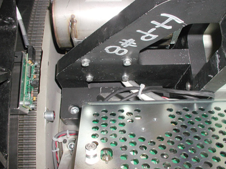
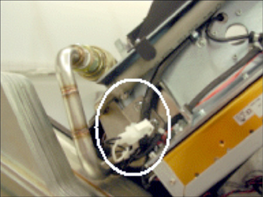
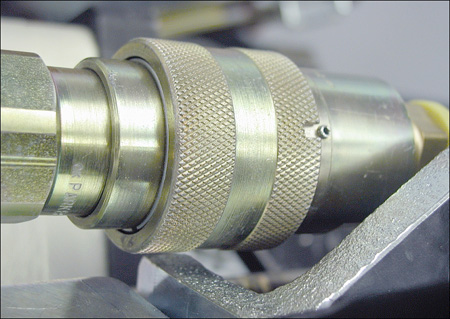
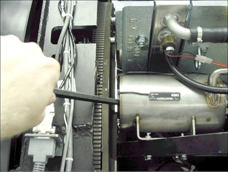

Operating Documentation
Direction 5193855-800, Rev# 4
LS 5.X RT Ltd. Access Service Information Adv
Operating Documentation |
| Required Persons | Preliminary Reqs | Procedure | Finalization |
|---|---|---|---|
| 1 | Timing Not Applicable | 30 mins | Timing Not Applicable |
Remove old pump and install new pump.
| Last Revised: | 10 November 2005 |
| Item | Qty | Effectivity | Part# | Manufacturer | |
|---|---|---|---|---|---|
| Hose Clamp | 1 - Shipped with pump and heat exchanger | Water-based coolant systems | 5122103 | - | |
| Oil Flow Meter | 1 | Oil-based coolant systems | 5151781 | - | |
| POTENTIAL FOR SHOCK. | |
| VOLTAGE MAY BE PRESENT. | |
| Use proper lockout/tagout procedures before replacing components. |
| POTENTIAL FOR SHOCK. | |
| VOLTAGE MAY BE PRESENT. | |
| Use proper lockout/tagout procedures before replacing components. |
Remove gantry power. Be certain to follow appropriate Lockout/Tagout procedures.
Remove side and front gantry covers.
Turn OFF all three switches (AXIAL DRIVE ENABLE, HVDC ENABLE, 120 VAC) on the Service Switch Panel.
Rotate the gantry so the tube is at the 2 o'clock position.
If this system is a water-based cooled system, use the small metal clamp (shipped with replacement part) to clamp off the black heat exchanger hose (see Illustration 1). This will prevent air ingestion during the replacement process. The clamp should be installed finger-tight.
Oil-cooled systems skip this step.
Illustration 1: HX Hose for clamping (water-based systems)

Remove the 4 M6 screws ( Illustration 2) that mount the pump to the 107 weight stack bracket.
Illustration 2: HX pump mounting M6 screws

Disconnect HX Pump 120 VAC at quick disconnect (see Illustration 3).
Remove two M6 nuts (shown in Illustration 3 behind 120 VAC quick disconnect) for the pump's front mounting plate.
Illustration 3: 120VAC connector and front M6 nuts

Disconnect pump from heat exchanger at quick disconnect. Line the slot up with the pin and push. The pump should easily disengage (see Illustration 4).
Illustration 4: Align Pin and Slot

Disconnect oil hose from X-Ray tube.
Remove power interface board cover.
Remove pump and hose from gantry.
Rotate gantry so that X-Ray tube is at the 2 o’clock position.
Connect pump to Heat Exchanger at quick disconnect. Make sure you align the pin and slot, then connect. See Illustration 4 in HX Pump Removal.
Route the hose to the tube. It routes underneath the Heat Exchanger shroud, but between the shroud and the clear plastic power interface board cover.
Connect the pump hose to the tube. Secure the quick disconnect using the safety locking mechanism. The torque spec. for the quick disconnect safety mechanisms is 9.9 N-m (7.3 lb-ft, 88 lb-in, 101 kg-cm), however, if the locking mechanism rotates in relation to the quick disconnect, tighten slowly until it does not do so.
| NOTE: | Do not severely overtighten the M6 bolts. Doing so can cause the quick disconnects to leak. |
Reattach the Power Interface board cover.
Connect pump 120 VAC connector.
Unmount the ORP assembly by removing the two M12 bolts.
Install the 4 M6 HX pump mounting screws. If you just replaced the heat exchanger, it may require some force to realign the pump. Using a lever helps but be sure not to damage the hour meter. See Illustration 5.
Illustration 5: Using lever to push pump around to align holes

Attach the ORP assembly.
Apply “pre-load” torque to the two M12 bolts:
| 25 ft.-lbs | 33 N-m | 295 in-lbs | 340 kg-cm |
Apply final torque to the two M12 bolts:
| 49 ft.-lbs | 66 N-m | 590 in-lbs | 680 kg-cm |
Attach the two M6 nuts for the front pump.
Ensure that proper torque specifications (see Torque Wrench Information) are followed for all fasteners.
Ensure that clamp installed in HX Pump Removal, Step 5 is removed, if applicable.
(For Oil-based Cooling Systems) Perform Hercules Coolant Flow Rate Measurement
Run the appropriate Gantry Balance Procedure (e.g., go to Setup & Cals → Gantry → Gantry Balance Procedure), to ensure that the gantry is safe for all rotation speeds.